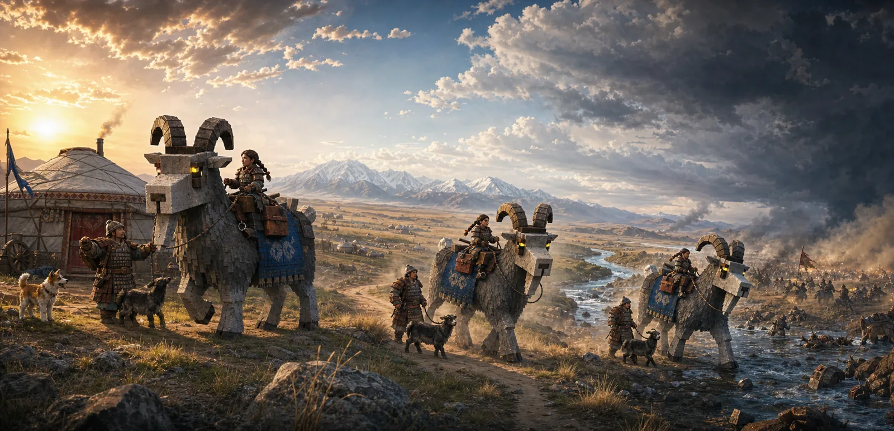
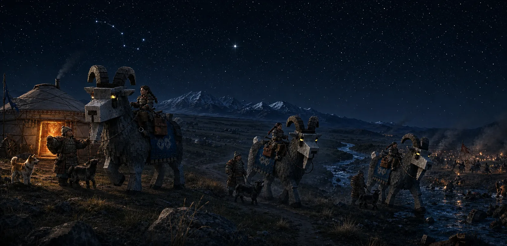
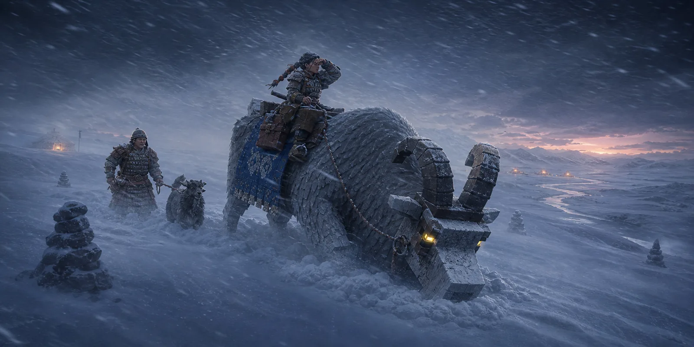
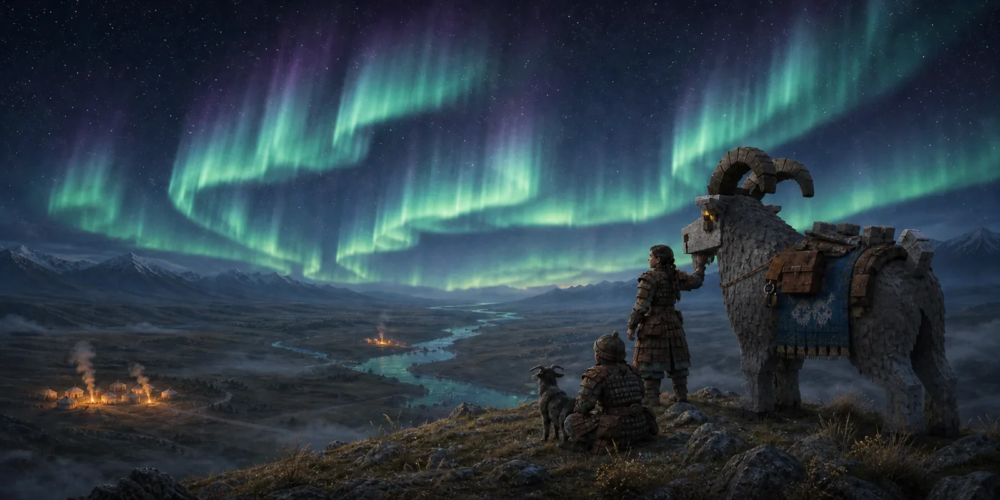
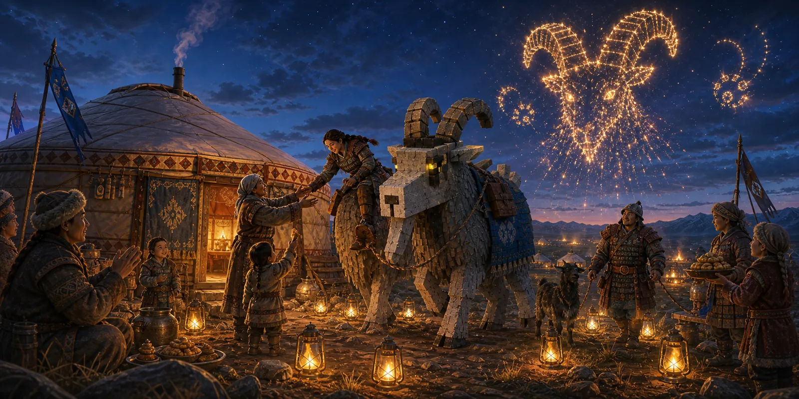

Concept art · Visual direction
One beautiful frame was not enough.
A five-image series asked whether GOAT Knight could change its weather, hour, and entire situation without forgetting the rider, the companion, or the enormous goat carrying them through it.

It starts in daylight, with a woman, a RidgeGray war goat, a nökör companion, a smaller goat and a blue blanket leaving the Ger. They travel beside the river. They arrive at Fisher's Bend. Nothing about them changes on the way — not their faces, not their gear, not how enormous that goat is next to a person.
That sounds obvious until you try it. Most games let you cross into somewhere beautiful and quietly forget who walked in.
So the question became: does it hold up when the light stops helping? In the dark. In a blizzard. Under something genuinely strange. At a party. If the answer only worked at golden hour from one angle, it wasn't a look — it was a lucky screenshot.
Four more images went and found out.
02
Follow the same star
At night, Polaris becomes the fixed point above Places that are otherwise free to own their terrain, sound, light, and authored moments. The party moves. North does not.

03
When the road disappears
Before dawn, a whiteout erases the ideal route. The giant goat makes the trail; cairns, a Ger lantern, and distant watchfires keep origin and destination legible. The scene asks for a world that remains understandable when conditions stop being kind.

04
Aurora over Three Fires
One party on one ridge, three fires burning in the valley below, and a sky doing something worth stopping for. Nobody has to tell you the fires, the river and the riders belong to the same world — you can see that they do. That is the whole job, and when it works you don't notice it happening.

05
Bring the fire home
The circuit is only complete if the journey changes home. Repairs and travel marks return with the party. People recognize them. Even the celebration answers the silhouette that arrived: a horned goat drawn in sparks above the Ger.

What it's arguing for.
Monumental goats and human-sized relationships. Wool, felt, leather, wood, stone and metal that look like you could touch them. The Central Asian steppe rather than another generic European fantasy kingdom. Weather that changes the world without swapping out the cast. And warm light that always means something — where you came from, where you're going, or that you're safe.
A player may cross into a radically different scene, but should never wonder whether the game forgot who crossed it.
That is direction, not a claim that every image already exists in the public build. If you want to see what is live today, the honest answer is still the same: ride the goat.
And one rule came out of it.
These images were made for an internal push to settle how the finished game should look. It produced an argument we didn't expect, and we've adopted it for the next art pass:
Every decision about how something looks gets judged at the size you will actually see it — not blown up on ours.
It sounds small. It isn't. Measured against our own spec for a store image, we had been taking those pictures from nearly eight times too far away — a distance that is right for playing, and far too far for the goat to be the thing you notice. So the best argument for this game was being made by an animal four pixels tall.
The fix costs no new art. The close cameras already exist in the game; nobody had pointed a picture through them. That is the next pass: move the camera before repainting anything.